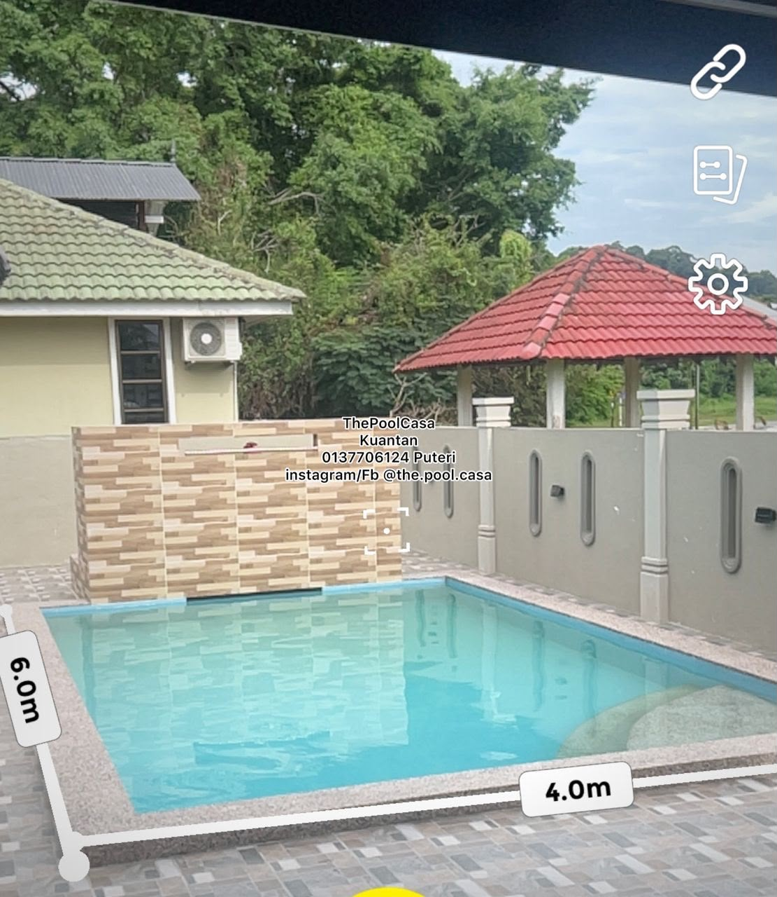

Ruang untuk
bernafas & bersama.
Rumah percutian yang tenang di tengah Kuantan — lengkap dengan kolam renang persendirian, 4 bilik berhawa dingin dan ruang untuk sehingga 14 tetamu.

Tempat untuk pulang.
Jelas dari awal.
Senang untuk merancang.
Rancang percutian anda dengan kadar tetap The Pool Casa. Semua tempahan memerlukan deposit RM300.
Semak tarikh sekarang ↗Datang sebagai tetamu.
Pulang sebagai kenangan.
Rumah semi-D satu tingkat dengan private pool dan kelengkapan penuh aircond — dibuat untuk keluarga dan kumpulan kecil yang mahu masa bersama terasa lebih bermakna.
Empat bilik katil Queen, dua katil angin, ruang tamu berhawa dingin dan kapasiti selesa sehingga 14 tetamu termasuk kanak-kanak.
Terokai kemudahan ↗Setiap ruang ada
ceritanya sendiri.
Semua yang anda
perlukan untuk santai.
Tak perlu fikir banyak. Kami sediakan asas yang lengkap supaya anda boleh fokus pada perkara paling penting: masa bersama.
Dekat dengan yang
menjadikan Kuantan istimewa.
Alor Akar ialah kawasan kejiranan yang tenang dan mudah diakses — hanya beberapa minit dari pusat bandar dan pantai kegemaran Kuantan.
Buka di Google Maps ↗Alor Akar, Kuantan
Jadikan tarikh ini
milik anda.
Hantar tarikh pilihan anda dan kami akan bantu semak ketersediaan. Deposit tempahan: RM300.